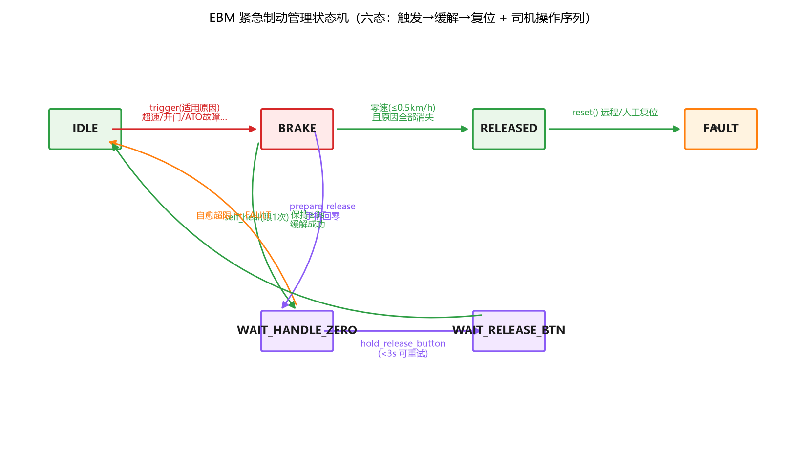
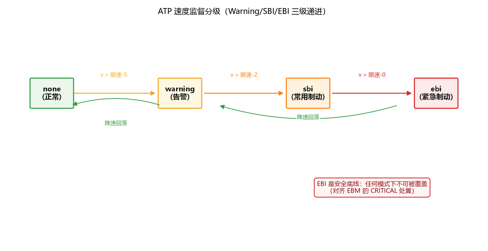
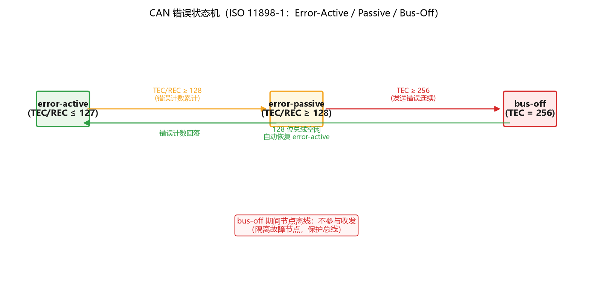
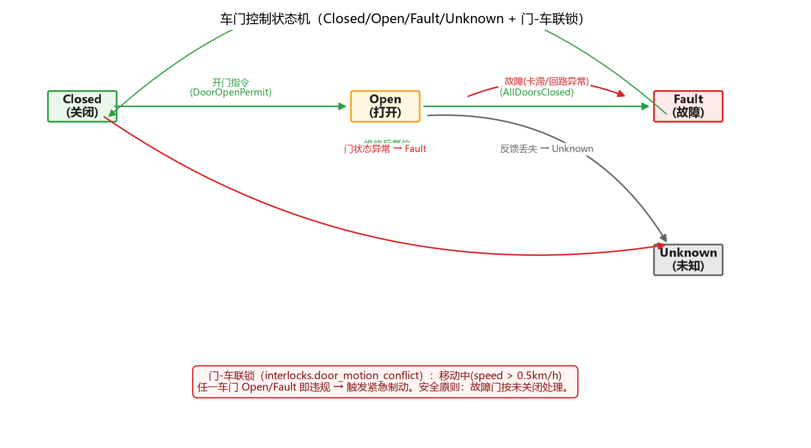
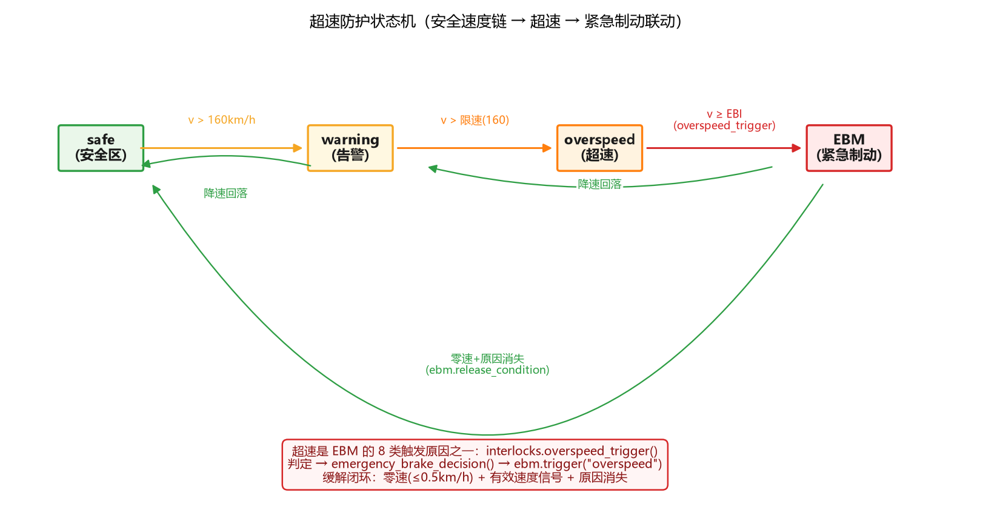
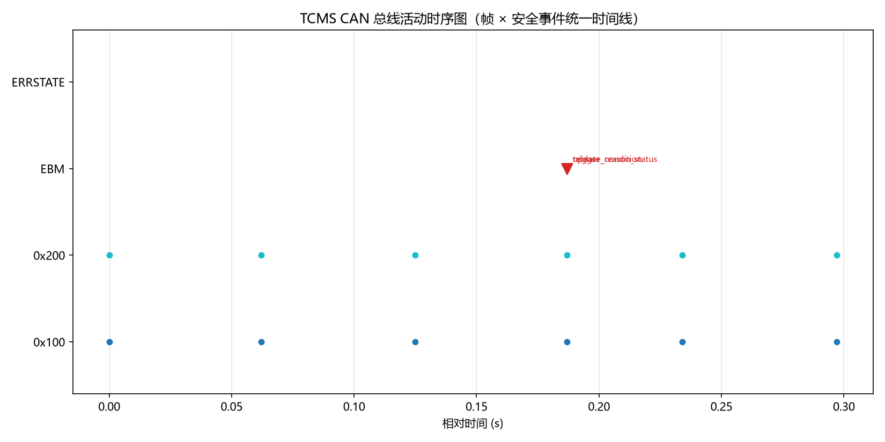

列车网络控制系统（TCMS）CAN 总线报文自动化测试框架 —— 虚拟总线 · DBC 协议库 · 安全联锁逻辑 · 紧急制动管理 · 覆盖率门禁 CI
用例/覆盖率由 docs/reports/latest.json（CI 每 push 生成）实时驱动；
未加载到时显示仓库最新提交静态值。
TCMSNodeSimulator 按 DBC 周期（50/100/500ms）自动发送报文，支持故障注入：节点失活 / 越界 / 抖动 / 总线短路断路。
驾驶模式 × 原因 × 处置矩阵决策，SIL2/SIL4 双通道表决，司机缓解操作序列（手柄回零 + 按钮保持 ≥3s），自愈限次。
门-车联锁、超速-制动联锁、牵引-制动互锁、方向-速度联动、车门-站台联动 —— 任何违规显式返回原因。
WCRT 可调度性分析（Tindell 迭代）、总线负载率（位级帧模型）、CAN 错误状态机（ISO 11898-1 TEC/REC）。
帧 × 安全事件统一时间线（黑匣子语义），事故冻结窗口，JSON/CSV 导出，完整回放链（.asc → 告警断言）。
707 用例 · 属性测试（hypothesis）· 模糊测试 · CI 四 job（pr-smoke → lint → 测试矩阵 → demo-smoke）· 覆盖率门禁 97% · 失败现场自动导出 · JUnit 趋势报表。
FMEA 故障字典（22 条）→ YAML 场景编排 → 分层执行（smoke/全量）→ RTM 需求追溯（SR-01~18）→ HTML/JUnit/Allure 多格式报告 → 趋势分析。
examples/demo_trip.asc（146 帧真实格式日志）→ replay_demo.py 5 步剧情断言；demo.py 9 步全场景 25 项自证断言 —— 文档示例也进回归。

EBM 紧急制动管理状态机（六态）

ATP 速度监督分级（Warning/SBI/EBI）

CAN 错误状态机（ISO 11898-1）

车门控制状态机（Closed/Open/Fault/Unknown）

超速防护状态机（安全 → 超速 → EBM 联动）

事件时序甘特图（帧 × 安全事件统一时间线）
详见 docs/safety_case.md —— 安全需求（SR-01~SR-18）→ 实现模块 → 测试证据 → 覆盖率门禁的可追溯证据链；追溯矩阵见仓库 tests/rtm.csv（机器可读）。
SIL 不是标上去的，是映射出来的 —— 每条安全需求都有实现模块、专项测试与覆盖率证据。
详见 docs/interview_guide.md —— 60 秒 STAR 叙事 + 六层面试话术 + 高频追问 Q&A（HR 级 / 技术级 / 诚实边界）+ 现场演示脚本 + 数字速查卡。
完整文档见 GitHub 仓库。
git clone https://github.com/zych2002918/tcms-can-test.git
cd tcms-can-test
python -m venv .venv && .venv/Scripts/activate
pip install -r requirements.txt
python run.py # 全部测试 + HTML 报告
python demo.py # 全场景演示（面试用）